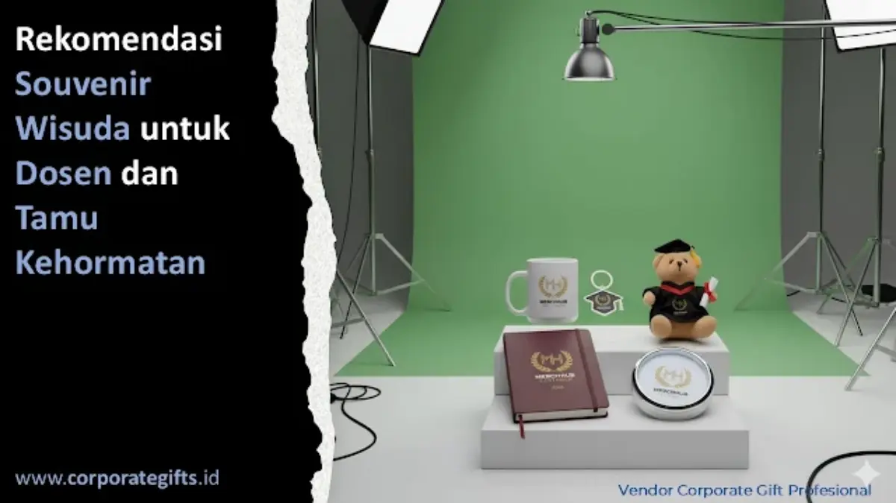

Corporate Gifts ID - Souvenir wisuda terbaik untuk dosen dan tamu kehormatan adalah barang eksklusif yang elegan, fungsional, dan bermakna simbolis, seperti plakat kristal custom, gift set premium, smart tumbler branded, atau batik eksklusif. Jenis souvenir ini dipilih karena mencerminkan penghargaan institusi terhadap kontribusi akademik mereka, bukan sekadar hadiah formalitas.
Wisuda bukan hanya momen spesial bagi para lulusan yang merayakan kelulusan, tetapi juga menjadi ajang penghormatan resmi bagi para dosen, promotor, rektorat, dan tamu kehormatan yang hadir. Mereka adalah pilar fundamental dalam ekosistem akademik perguruan tinggi yang senantiasa memberi bimbingan, dedikasi intelektual, dan inspirasi. Oleh karena itu, memberikan souvenir wisuda yang berkelas menjadi wujud apresiasi yang wajib dipersiapkan secara matang.
Poin Kunci Souvenir Wisuda Dosen & Tamu Kehormatan:
- Simbol Penghormatan Tertinggi: Cinderamata wisuda untuk dosen dan tamu kehormatan dirancang eksklusif sebagai wujud terima kasih mendalam atas dedikasi akademik.
- Fungsional & Prestisius: Pilihan item memadukan nilai guna tinggi dan prestise seperti plakat kristal kustom, smart tumbler SUS304, dan leather gift set.
- Personalisasi Lambang Resmi: Sentuhan grafir laser nama dan lambang universitas atau senat menegaskan kredibilitas institusi pendidikan tinggi.
- Konsep Berkelanjutan: Tren cinderamata modern kian mengedepankan material ramah lingkungan dan packaging reusable berkelas.
Mengapa Souvenir untuk Dosen dan Tamu Kehormatan Penting?
Dalam setiap upacara wisuda, kehadiran dewan dosen dan tamu kehormatan memberikan legitimasi serta kesakralan seremonial. Memberikan souvenir kepada mereka bukan sekadar rutinitas birokrasi, melainkan manifestasi etika akademik dan penghargaan atas waktu serta sumbangsih mereka. Cinderamata yang dipersiapkan dengan apik akan memancarkan rasa hormat universitas sekaligus memperkokoh citra profesional lembaga pendidikan.
Kendati demikian, pemilihan souvenir tidak boleh disamakan dengan merchandise reguler wisudawan. Penting untuk menyeimbangkan nilai simbolik, estetika visual, serta efisiensi anggaran institusi. Sebagaimana dijelaskan dalam panduan Inspirasi Souvenir Promosi Doktor dan Acara Akademik, kurasi cinderamata formal membutuhkan ketelitian material agar meninggalkan kesan mendalam yang berkesinambungan.
5 Pilihan Souvenir Eksklusif untuk Dosen dan Tamu Kehormatan
Berdasarkan preferensi institusi pendidikan tinggi terkemuka, berikut lima opsi cinderamata prestisius yang sangat direkomendasikan:
- Plakat Kristal atau Akrilik Premium: Plakat berdesain minimalis geometris dengan grafir laser nama lengkap, gelar akademik, dan lambang universitas senantiasa menjadi cinderamata abadi. Sangat cocok diberikan kepada rektor, dekan, promotor, dan guru besar.
- Gift Set Eksekutif: Perpaduan serasi antara pulpen logam rollerball grafir nama, buku agenda berbalut kulit sintetis PU tebal, serta flashdisk OTG metal dalam kemasan hardbox magnetik menyuguhkan kesan profesionalitas kelas atas.
- Smart Tumbler Custom SUS304: Produk minuman fungsional modern berteknologi insulasi vakum ganda dengan indikator suhu LED sentuh pada tutupnya. Material food-grade bebas BPA ini sangat menunjang gaya hidup sehat di lingkungan kampus.
- Batik Eksklusif atau Scarf Sutra Premium: Sebagai penghormatan terhadap kearifan budaya nusantara, lembaran kain batik tulis halus atau selendang sutra bermotif elegan menghadirkan sentuhan personal yang kaya nilai historis.
- Ornamen Dekoratif Meja Berukir: Hiasan meja kerja berbahan kayu jati solid berpadu pelat kuningan etsa dengan ukiran nama institusi menjadi memorabilia prestisius yang memperindah ruang kerja dosen.

Pilihan gift set eksklusif dan plakat kristal berbalut box beludru kustom untuk dosen dan pimpinan senat.
Tabel Klasifikasi Souvenir Wisuda Berdasarkan Penerima
Agar panitia pelaksana wisuda dapat mengalokasikan anggaran secara akurat dan tepat sasaran, berikut matriks rekomendasi cinderamata:
| Penerima / Kategori | Pilihan Souvenir | Karakteristik & Kemasan |
|---|---|---|
| Rektor & Senat Guru Besar | Plakat Kristal Optik 3D & Pen Set Logam | Grafir laser presisi, coating emas, dan box beludru marun |
| Dosen Pembimbing & Penguji | Executive Gift Set & Smart Tumbler SUS304 | Agenda kulit emboss, sensor suhu digital, dan hardbox kustom |
| Tamu Kehormatan VIP & Pejabat | Batik Sutra Eksklusif & Ornamen Meja Kayu | Kemasan motif etnik elegan, ukiran logo kuningan, dan pita satin |
| Panitia Dosen & Mitra Kampus | Tumbler Bambu Ramah Lingkungan & Notebook PU | Material eco-friendly, sablon UV logo tajam, dan reusable bag |
Tren Souvenir Wisuda: Antara Makna dan Modernitas
Dunia cinderamata akademik kian bergerak ke arah yang dinamis. Tidak hanya menitikberatkan pada kemewahan fisik semata, melainkan juga menonjolkan aspek keberlanjutan lingkungan (sustainability). Banyak perguruan tinggi negeri maupun swasta kini beralih memilih produk berbahan bambu terbarukan, stainless steel tahan seumur hidup, serta kotak kemasan ramah lingkungan yang dapat difungsikan kembali sebagai organizer meja.
Pergeseran ini sejalan dengan tren Souvenir untuk Acara Wisuda yang Berkesan dan Bermakna, di mana panitia dan pimpinan universitas kian peduli terhadap ikatan emosional penerima. Cinderamata bukan lagi sebatas benda mati, melainkan jembatan komunikasi yang menyampaikan rasa hormat tulus almamater.
Inspirasi Desain Souvenir Wisuda yang Kekinian
Sentuhan desain kontemporer dan personalisasi detail merupakan kunci utama agar cinderamata wisuda tampak berwibawa. Perpaduan palet warna korporat yang tenang (seperti navy blue, emerald green, dan marun) dengan sentuhan foil emas atau grafir laser tipis memberikan nuansa kemewahan yang bersahaja tanpa terkesan berlebihan.
Model cinderamata berkarakter seperti yang dibahas pada Inspirasi Souvenir Wisuda Unik dan Kekinian kini semakin digemari oleh universitas-universitas di Indonesia karena sanggup memadukan nilai keagungan tradisi dengan kepraktisan zaman modern.
Tips Memilih Vendor Souvenir Wisuda Profesional
Guna menjamin kelancaran seremonial wisuda tanpa kendala teknis, pastikan institusi Anda bermitra dengan vendor resmi yang berpengalaman menangani skala pengadaan korporat dan akademik:
- Layanan Mockup Digital & Sample Approval: Pastikan vendor menyediakan asistensi dummy atau visual 3D sebelum tahapan cetak massal dieksekusi.
- Standarisasi Material & Food-Grade: Periksa sertifikasi bahan seperti stainless steel SUS304 dan material bebas racun untuk produk drinkware.
- Kapasitas Produksi & Ketepatan Waktu: Evaluasi rekam jejak kapasitas mesin produksi vendor guna memastikan pesanan tiba sebelum tanggal seremonial wisuda.
- Legalitas Badan Usaha & Faktur Pajak: Untuk instansi pemerintah dan universitas, pastikan vendor mampu menerbitkan Faktur Pajak PPN resmi dan dokumen pendukung SPJ.
Kesimpulan
Souvenir wisuda untuk dosen dan tamu kehormatan adalah bentuk penghormatan luhur atas pengabdian tanpa pamrih para pendidik bangsa. Dengan menyajikan cinderamata yang elegan, fungsional, dan bermakna simbolis, universitas berhasil menanamkan kesan profesionalisme yang abadi di benak setiap tamu terhormat.
Melalui perencanaan yang terstruktur dan kolaborasi bersama vendor profesional seperti CorporateGifts.ID, setiap seremonial wisuda akan terselenggara dengan penuh kemegahan, kehormatan, dan kebanggaan bersama.
Pertanyaan Seputar Souvenir Wisuda (FAQ)

Ditulis oleh: Arinda Zakia
Senior Corporate Gifting SpecialistSpesialis riset merchandise korporat, kurasi cinderamata akademik perguruan tinggi, dan strategi corporate branding berpengalaman lebih dari 7 tahun dalam industri cinderamata Indonesia.
Lihat Profil Lengkap & Panduan Lainnya